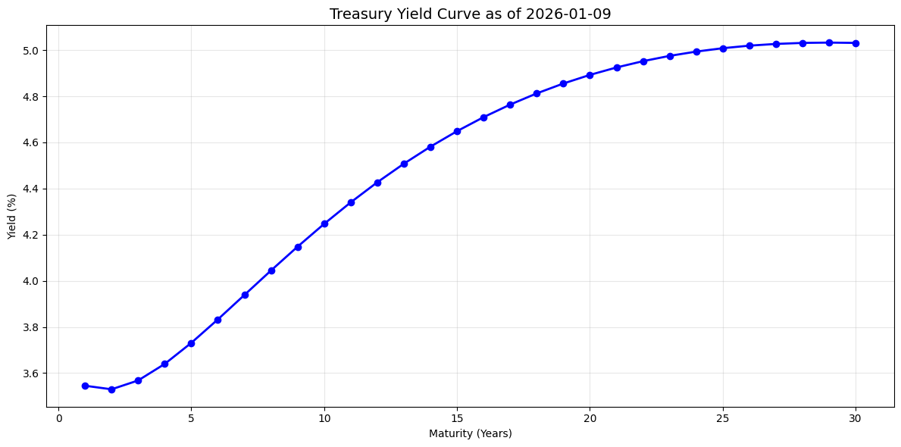
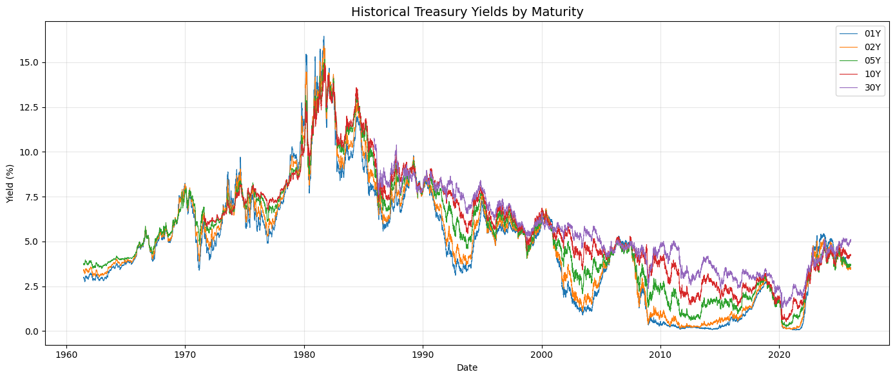
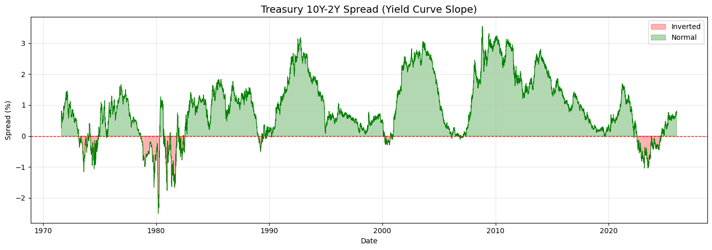
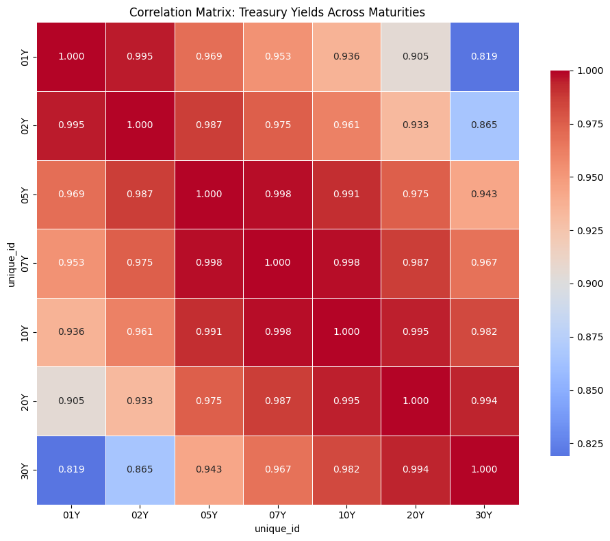

Federal Reserve Treasury Yield Curve#
This notebook provides summary statistics and visualizations for the Federal Reserve’s Treasury yield curve data based on the Gurkaynak, Sack, and Wright (2007) model.
Data Source#
Data is publicly available from the Federal Reserve.
Reference#
Gurkaynak, Refet S., Brian Sack, and Jonathan H. Wright. “The US Treasury yield curve: 1961 to the present.” Journal of Monetary Economics 54.8 (2007): 2291-2304.
# Import necessary libraries
import pandas as pd
import matplotlib.pyplot as plt
import seaborn as sns
import warnings
import chartbook
BASE_DIR = chartbook.env.get_project_root()
DATA_DIR = BASE_DIR / "_data"
warnings.filterwarnings("ignore")
Load the Dataset#
The dataset contains zero-coupon Treasury yields for maturities from 1 to 30 years.
# Load the yield curve data
df = pd.read_parquet(DATA_DIR / "ftsfr_treas_yield_curve_zero_coupon.parquet")
print(f"Dataset shape: {df.shape}")
df.head()
Dataset shape: (376712, 3)
| unique_id | ds | y | |
|---|---|---|---|
| 0 | SVENY01 | 1961-06-14 | 2.9825 |
| 1 | SVENY01 | 1961-06-15 | 2.9941 |
| 2 | SVENY01 | 1961-06-16 | 3.0012 |
| 3 | SVENY01 | 1961-06-19 | 2.9949 |
| 4 | SVENY01 | 1961-06-20 | 2.9833 |
# Pivot to wide format for analysis
df_wide = df.pivot(index='ds', columns='unique_id', values='y')
print(f"Wide format shape: {df_wide.shape}")
print(f"Tenors: {df_wide.columns.tolist()}")
Wide format shape: (16106, 30)
Tenors: ['SVENY01', 'SVENY02', 'SVENY03', 'SVENY04', 'SVENY05', 'SVENY06', 'SVENY07', 'SVENY08', 'SVENY09', 'SVENY10', 'SVENY11', 'SVENY12', 'SVENY13', 'SVENY14', 'SVENY15', 'SVENY16', 'SVENY17', 'SVENY18', 'SVENY19', 'SVENY20', 'SVENY21', 'SVENY22', 'SVENY23', 'SVENY24', 'SVENY25', 'SVENY26', 'SVENY27', 'SVENY28', 'SVENY29', 'SVENY30']
Summary Statistics#
# Summary statistics for each tenor
summary_stats = df_wide.describe().T
summary_stats
| count | mean | std | min | 25% | 50% | 75% | max | |
|---|---|---|---|---|---|---|---|---|
| unique_id | ||||||||
| SVENY01 | 16106.0 | 4.809459 | 3.258954 | 0.0554 | 2.303950 | 4.852237 | 6.664082 | 16.4620 |
| SVENY02 | 16106.0 | 5.002349 | 3.204157 | 0.1020 | 2.628175 | 4.866750 | 6.904200 | 15.9118 |
| SVENY03 | 16106.0 | 5.162044 | 3.137659 | 0.1272 | 2.867450 | 4.922799 | 7.083700 | 15.5746 |
| SVENY04 | 16106.0 | 5.298994 | 3.071867 | 0.1685 | 3.068850 | 5.036641 | 7.181158 | 15.3498 |
| SVENY05 | 16106.0 | 5.418824 | 3.011570 | 0.2218 | 3.345725 | 5.192362 | 7.277300 | 15.1776 |
| SVENY06 | 16106.0 | 5.524497 | 2.958283 | 0.2806 | 3.548400 | 5.313379 | 7.348475 | 15.0611 |
| SVENY07 | 16106.0 | 5.617864 | 2.912150 | 0.3413 | 3.711750 | 5.407650 | 7.414753 | 15.0109 |
| SVENY08 | 13570.0 | 5.816452 | 3.074481 | 0.4020 | 3.468525 | 5.739338 | 7.752375 | 14.9799 |
| SVENY09 | 13570.0 | 5.900859 | 3.035535 | 0.4618 | 3.633750 | 5.830343 | 7.782710 | 14.9572 |
| SVENY10 | 13570.0 | 5.975381 | 3.002294 | 0.5202 | 3.763250 | 5.897607 | 7.821714 | 14.9398 |
| SVENY11 | 13509.0 | 6.040651 | 2.980776 | 0.5770 | 3.866200 | 5.919044 | 7.871100 | 14.9340 |
| SVENY12 | 13509.0 | 6.098356 | 2.956955 | 0.6323 | 3.976200 | 5.960310 | 7.899800 | 14.9367 |
| SVENY13 | 13509.0 | 6.148774 | 2.937018 | 0.6859 | 4.081200 | 6.003589 | 7.927400 | 14.9407 |
| SVENY14 | 13509.0 | 6.192658 | 2.920487 | 0.7380 | 4.153200 | 6.041600 | 7.951300 | 14.9684 |
| SVENY15 | 13509.0 | 6.230695 | 2.906949 | 0.7816 | 4.212100 | 6.071815 | 7.975000 | 15.0394 |
| SVENY16 | 11111.0 | 5.849191 | 2.925250 | 0.8172 | 3.604550 | 5.243100 | 7.808672 | 15.1073 |
| SVENY17 | 11111.0 | 5.881652 | 2.917378 | 0.8529 | 3.644250 | 5.285000 | 7.835550 | 15.1716 |
| SVENY18 | 11111.0 | 5.909174 | 2.911281 | 0.8884 | 3.675650 | 5.320600 | 7.858474 | 15.2318 |
| SVENY19 | 11111.0 | 5.932295 | 2.906792 | 0.9236 | 3.708150 | 5.343300 | 7.875748 | 15.2879 |
| SVENY20 | 11111.0 | 5.951493 | 2.903773 | 0.9581 | 3.738700 | 5.362700 | 7.883839 | 15.3400 |
| SVENY21 | 10016.0 | 5.284259 | 2.123643 | 0.9919 | 3.421075 | 5.005450 | 6.921916 | 10.4856 |
| SVENY22 | 10016.0 | 5.293631 | 2.113586 | 1.0248 | 3.436550 | 5.007450 | 6.929820 | 10.5206 |
| SVENY23 | 10016.0 | 5.299783 | 2.103548 | 1.0567 | 3.452975 | 5.003950 | 6.936682 | 10.5553 |
| SVENY24 | 10016.0 | 5.303077 | 2.093561 | 1.0876 | 3.473700 | 4.997950 | 6.940729 | 10.5893 |
| SVENY25 | 10016.0 | 5.303841 | 2.083659 | 1.1174 | 3.493600 | 4.990150 | 6.941298 | 10.6217 |
| SVENY26 | 10016.0 | 5.302366 | 2.073879 | 1.1462 | 3.504050 | 4.977450 | 6.941569 | 10.6526 |
| SVENY27 | 10016.0 | 5.298914 | 2.064261 | 1.1738 | 3.515700 | 4.965500 | 6.938391 | 10.6819 |
| SVENY28 | 10016.0 | 5.293721 | 2.054842 | 1.2004 | 3.521050 | 4.947050 | 6.934286 | 10.7099 |
| SVENY29 | 10016.0 | 5.286998 | 2.045660 | 1.2258 | 3.523825 | 4.932950 | 6.924952 | 10.7365 |
| SVENY30 | 10016.0 | 5.278932 | 2.036751 | 1.2503 | 3.529150 | 4.917200 | 6.911414 | 10.7618 |
Data Coverage#
print(f"Date range: {df_wide.index.min()} to {df_wide.index.max()}")
print(f"Number of observations: {len(df_wide)}")
print(f"Missing values per tenor:")
print(df_wide.isnull().sum())
Date range: 1961-06-14 00:00:00 to 2026-01-09 00:00:00
Number of observations: 16106
Missing values per tenor:
unique_id
SVENY01 0
SVENY02 0
SVENY03 0
SVENY04 0
SVENY05 0
SVENY06 0
SVENY07 0
SVENY08 2536
SVENY09 2536
SVENY10 2536
SVENY11 2597
SVENY12 2597
SVENY13 2597
SVENY14 2597
SVENY15 2597
SVENY16 4995
SVENY17 4995
SVENY18 4995
SVENY19 4995
SVENY20 4995
SVENY21 6090
SVENY22 6090
SVENY23 6090
SVENY24 6090
SVENY25 6090
SVENY26 6090
SVENY27 6090
SVENY28 6090
SVENY29 6090
SVENY30 6090
dtype: int64
Current Yield Curve#
The most recent yield curve snapshot.
# Get the most recent yield curve
latest_date = df_wide.index.max()
latest_curve = df_wide.loc[latest_date].dropna()
# Extract maturity in years from tenor names (e.g., SVENY01 -> 1)
maturities = [int(col.replace('SVENY', '')) for col in latest_curve.index]
fig, ax = plt.subplots(figsize=(12, 6))
ax.plot(maturities, latest_curve.values, 'b-o', linewidth=2, markersize=6)
ax.set_title(f'Treasury Yield Curve as of {latest_date.strftime("%Y-%m-%d")}', fontsize=14)
ax.set_xlabel('Maturity (Years)')
ax.set_ylabel('Yield (%)')
ax.grid(True, alpha=0.3)
ax.set_xticks(range(0, 31, 5))
plt.tight_layout()
plt.show()

Historical Yield Curve Evolution#
Time series of selected tenors.
# Select key tenors for visualization
key_tenors = ['SVENY01', 'SVENY02', 'SVENY05', 'SVENY10', 'SVENY30']
available_tenors = [t for t in key_tenors if t in df_wide.columns]
fig, ax = plt.subplots(figsize=(14, 6))
for tenor in available_tenors:
label = tenor.replace('SVENY', '') + 'Y'
ax.plot(df_wide.index, df_wide[tenor], label=label, linewidth=0.8)
ax.set_title('Historical Treasury Yields by Maturity', fontsize=14)
ax.set_xlabel('Date')
ax.set_ylabel('Yield (%)')
ax.legend(loc='upper right')
ax.grid(True, alpha=0.3)
plt.tight_layout()
plt.show()

Yield Curve Slope (10Y - 2Y Spread)#
if 'SVENY10' in df_wide.columns and 'SVENY02' in df_wide.columns:
spread_10_2 = df_wide['SVENY10'] - df_wide['SVENY02']
fig, ax = plt.subplots(figsize=(14, 5))
ax.plot(spread_10_2.index, spread_10_2.values, linewidth=0.8, color='green')
ax.axhline(y=0, color='red', linestyle='--', linewidth=1)
ax.fill_between(spread_10_2.index, 0, spread_10_2.values,
where=(spread_10_2 < 0), color='red', alpha=0.3, label='Inverted')
ax.fill_between(spread_10_2.index, 0, spread_10_2.values,
where=(spread_10_2 >= 0), color='green', alpha=0.3, label='Normal')
ax.set_title('Treasury 10Y-2Y Spread (Yield Curve Slope)', fontsize=14)
ax.set_xlabel('Date')
ax.set_ylabel('Spread (%)')
ax.legend()
ax.grid(True, alpha=0.3)
plt.tight_layout()
plt.show()
print(f"\nSpread Statistics:")
print(f" Mean: {spread_10_2.mean():.2f}%")
print(f" Std: {spread_10_2.std():.2f}%")
print(f" Min: {spread_10_2.min():.2f}%")
print(f" Max: {spread_10_2.max():.2f}%")
print(f" Current: {spread_10_2.iloc[-1]:.2f}%")

Spread Statistics:
Mean: 0.93%
Std: 1.00%
Min: -2.51%
Max: 3.55%
Current: 0.72%
Correlation Matrix#
Correlation between yields at different maturities.
# Select subset of tenors for correlation
corr_tenors = ['SVENY01', 'SVENY02', 'SVENY05', 'SVENY07', 'SVENY10', 'SVENY20', 'SVENY30']
available_corr = [t for t in corr_tenors if t in df_wide.columns]
corr_matrix = df_wide[available_corr].corr()
# Rename for display
rename_dict = {t: t.replace('SVENY', '') + 'Y' for t in available_corr}
corr_matrix = corr_matrix.rename(index=rename_dict, columns=rename_dict)
plt.figure(figsize=(10, 8))
sns.heatmap(
corr_matrix,
annot=True,
fmt=".3f",
cmap="coolwarm",
center=0.9,
square=True,
linewidths=0.5,
cbar_kws={"shrink": 0.8}
)
plt.title('Correlation Matrix: Treasury Yields Across Maturities', fontsize=12)
plt.tight_layout()
plt.show()

Summary#
This dataset provides daily zero-coupon Treasury yields estimated using the Gurkaynak, Sack, and Wright (2007) model. The yields cover maturities from 1 to 30 years and are widely used in fixed income research and practice.
Key applications:
Yield curve analysis and term structure modeling
Fixed income derivatives pricing
Monetary policy analysis
Risk-free rate estimation